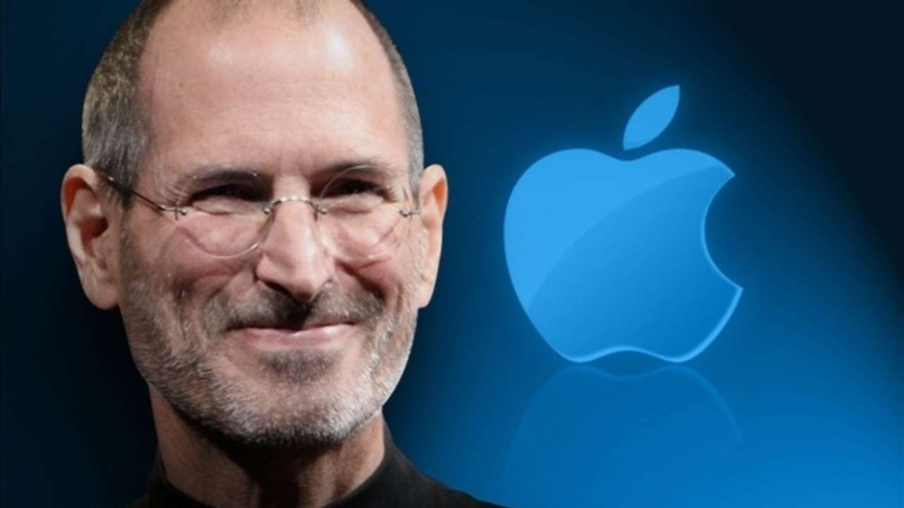

Steve jobs
The people who are crazy enough to think
they can change the world are the ones who do.
-steve jobs
Steven Paul was born in San Francisco, the son of Abdulfattah Jandali and Joanne Schieble. He is quickly adopted by Paul and Clara Jobs
Steve Jobs meets Steve Wozniak, 5 years older, through a mutual friend. Woz and Steve share a love of electronics, Bob Dylan, and pranks
Woz and Steve show the early Apple I board at the Homebrew Computer Club
Steve Jobs and Woz show off the Apple I at the Personal Computing Festival in Atlantic City, with help from Dan Kottke
At Apple, work starts on the Apple III and the Lisa, while Jef Raskin begins The Book of Macintosh
Apple launches the Apple III, which will prove a disastrous flop
Launch of the Lisa computer. The Lisa team later merges with the Mac team under Steve Jobs's leadership
PepsiCo CEO John Sculley becomes Apple's CEO after having been wooed by Steve Jobs for several months
Steve Jobs resigns from Apple and starts NeXT with five other refugees from Apple. Apple announces it will sue NeXT
Apple, which was desperately looking for a modern operating system to buy, eventually buys NeXT for $400 million. Steve Jobs is named "informal adviser" to Apple CEO Gil Amelio
Steve Jobs introduces Apple's revolutionary iMac at the Flint Center auditorium in Cupertino, 14 years after he had introduced the Macintosh at that same place
Introduction of the iMac DVs and of iMovie, the first of Apple's first Digital Hub app
Apple opens the revolutionary online iTunes Music Store in the US, after negotiating landmark deals with all major music labels
At Macworld 2008, Steve Jobs introduces MacBook Air, with the tagline 'the world's thinnest notebook'. Three years later, it will come to redefine all of Apple's notebook product line
teve Jobs resigns as CEO of Apple, with the words 'I have always said if there ever came a day when I could no longer meet my duties and expectations as Apple's CEO, I would be the first to let you know. Unfortunately, that day has come.' Tim Cook becomes Apple CEO
Steve Jobs dies at home, surrounded by his family
| Born: |
Steven Paul Jobs
February 24, 1955
San Francisco, California, U.S. |
| Died: |
October 5, 2011 (aged 56)
Palo Alto, California, U.S. |
| Occupation |
Co-founder, Chairman, and CEO of Apple Inc.
Primary investor and CEO of Pixar
Founder and CEO of NeXT |
"Have the courage to follow your heart and intuition. They somehow know what you truly want to become."
-STEVE JOBS
Do read more about this impeccable personality here.